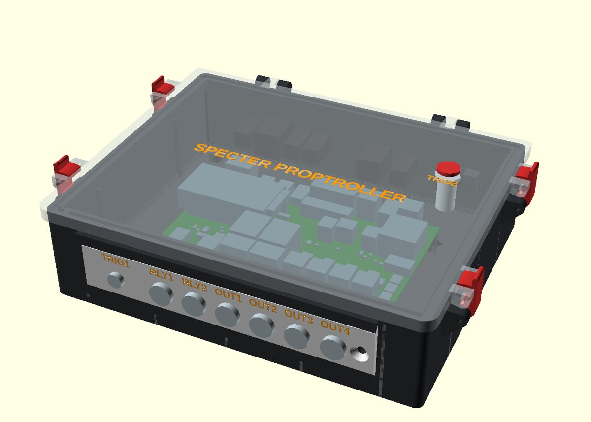
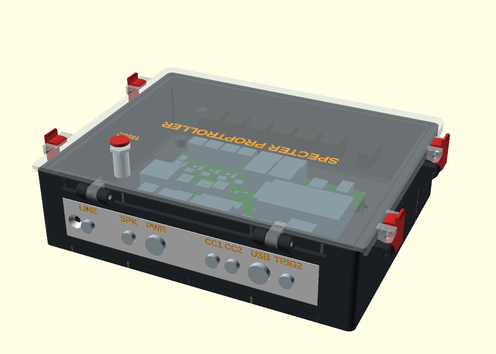
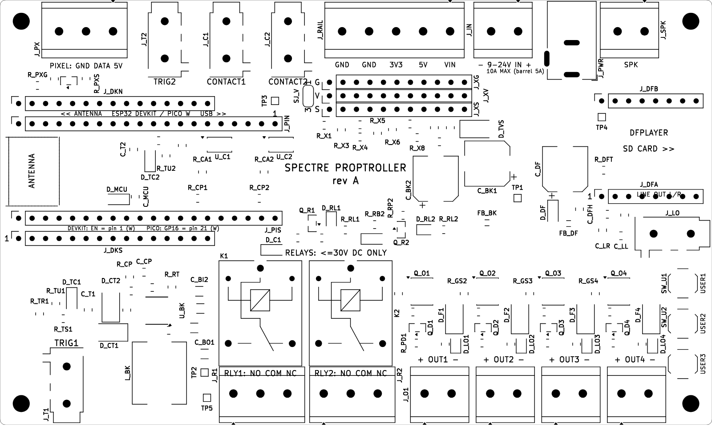
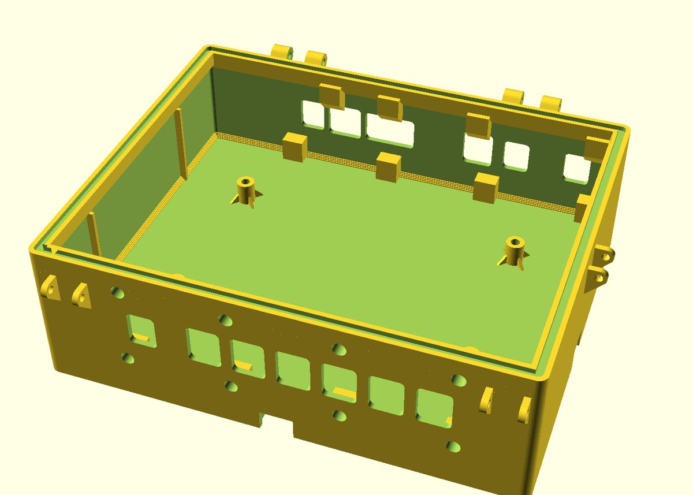
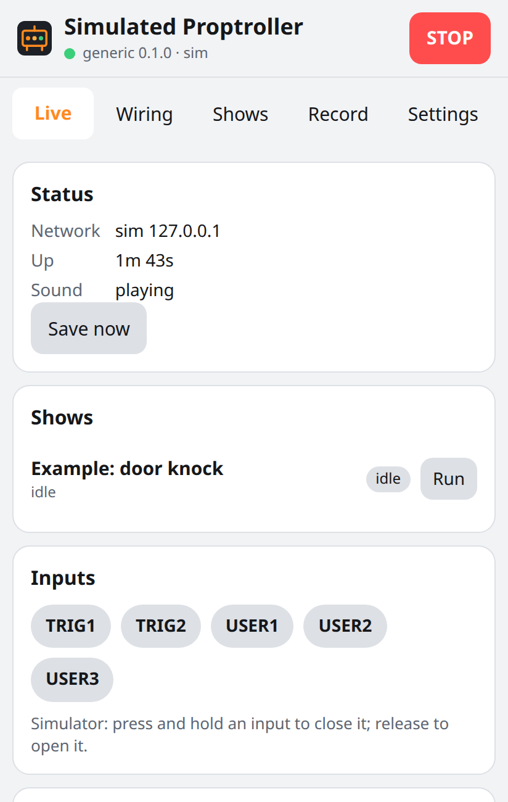

Specter Proptroller Build Guide: the board in its 3D-printed case
Board rev A · enclosure as in enclosure/design.toml · 2026-10-20 Name: the product is the Specter Proptroller. The rev A board's silkscreen reads "SPECTRE PROPTROLLER"; file and repository names keep their current spelling. Status: the rev A board has not been built or tested yet, and the case has not been printed yet. Every box marked
"First build: check" is something the first builder must confirm and report back. All sizes come from
enclosure/design.toml, enclosure/README.md and hardware/README.md.


The case model (OpenSCAD), front and back. The board sits inside on four standoffs.
Safety. The board is for low-voltage DC only (9-24 V DC in). Nothing on it is rated for mains (wall power).
It has no fuses and no reverse-polarity protection: use a listed DC power supply with its own over-current protection, rated 10 A or less.
The relays switch DC up to 30 V only. Switch any mains device with a separate, listed relay module.
1. What you need
1a. Electronics
Item
Qty
Notes
Specter Proptroller board, rev A
1
134 x 80 mm. The surface-mount parts, the 3.5 mm jacks, the barrel jack, the relays and the USER buttons come fitted from the board maker.
Plug-in controller module
1
A 30-pin ESP32 DevKitor a Raspberry Pi Pico, Pico W, Pico 2 or Pico 2 W. Never fit both. The phone page needs Wi-Fi: a DevKit, Pico W or Pico 2 W.
DFPlayer Mini sound module
1
Plus a microSD card for the sound files.
Passive speaker
optional
4 Ω or more. The amplifier gives 3 W at most into 4 Ω.
DC power supply
1
9-24 V DC, listed, with over-current protection, 10 A or less. Use the voltage your loads need.
1b. Parts you solder onto the board yourself
These are not fitted by the board maker (the design calls them "DNP"). The names are the board's reference designators, printed on the board.
Part
Qty
Where (board reference)
1x15 female socket, 2.54 mm pitch, 8.5 mm tall
2
J_DKN, J_DKS: only for an ESP32 DevKit (the two outer rows)
1x20 female socket, 2.54 mm pitch, 8.5 mm tall
2
J_PIN, J_PIS: only for a Pico (the two inner rows)
1x8 female socket, 2.54 mm pitch, 8.5 mm tall
2
J_DFA, J_DFB: the DFPlayer
5.08 mm screw terminal block, 2-pole
6
J_IN (power in), J_O1-J_O4 (OUT1-OUT4), J_SPK
5.08 mm screw terminal block, 3-pole
3
J_R1, J_R2 (RLY1, RLY2), J_PX (PIXEL)
5.08 mm screw terminal block, 5-pole
optional
J_RAIL (power out to a small accessory)
1x11 male pin header, 2.54 mm
optional, 3
J_XS, J_XV, J_XG: the S / V / G expansion rows (sensors and add-ons)
The terminal holes are 1.6 mm. A 5.08 mm terminal block fits, or you can solder a 16 AWG stranded wire straight into the holes.
1c. Case hardware (from the enclosure README and design.toml)
Item
Qty
For
M3 heat-set insert, M3 x 5.7 short (4.0 mm hole)
4
the board standoffs
M3 x 6 pan-head screw
4
the board onto the standoffs
M3 x 20 pan-head screw, or #4 x 3/4 in pan head
2
hinge pins (no nuts: each threads into the far knuckle)
M3 x 20 pan-head screw, or #4 x 3/4 in pan head
8
latch pivots and keepers (no nuts)
M4 heat-set insert, M4 x 8.1 (5.6 mm hole)
2
one stop screw per faceplate
M4 x 10 flat head, 90° countersunk, stainless
2
the faceplate stop screws
Screw-on rubber foot, with M3 x 6-8 self-tapping (or #4) screw
4
one in each corner under the floor
Panel-mount female DC barrel jack, 12 mm cutout
7
OUT1-OUT4, RLY1, RLY2, PWR
Panel-mount 3.5 mm jack, 7.8-8 mm cutout
6
TRIG1, LINE, SPK, CC1, CC2, TRIG2
Panel-mount USB-C extension with nut (12 mm thread)
1
USB on the back plate
10 mm metal momentary push button, IP65, pre-wired
1
TRIG2 on the lid (10.4 mm hole, nut underneath)
Neutral-cure silicone, clear, outdoor
1 tube
the lid seal bead, sealing the jacks
Hook-up wire, heat-shrink, short 3.5 mm plug leads
as needed
panel jacks to the board (section 5)
the faceplate gasket. The README says it is not decided yet (a cured bead, cord or tubing in the 2 x 1 mm groove on the back of each plate). Try it on the rail coupon first.
the values design.toml lists as assumed: the USB-C extension's nut across corners (wall window 16 mm), and the lid button's head diameter (12 mm) and depth (20 mm).
1d. Tools
Soldering iron, solder, side cutters, wire strippers. An M3 and an M4 heat-set insert tip (about 220 °C for PLA).
Multimeter. A bench power supply with a current limit is strongly recommended for the first power-on.
A 3D printer and Bambu Studio (the projects are set up for a Bambu Lab X1C with an AMS, for the two-colour labels).
OpenSCAD and Python 3, to build the print files (section 2).
2. Print the case
Build the print files. The STL and project files are not stored in git. In the repository, run enclosure/tools/print_build.sh.
It writes every STL into enclosure/stl/ and the two Bambu Studio projects specter-case.3mf (printed hinge pin) and
specter-case-everbilt.3mf (pads for metal utility hinges, not measured yet). It also checks each part: closed, manifold, and sitting at z = 0.
Material. PLA or PLA-CF while you try the fit. PETG or ASA for a case that lives outdoors: PLA softens in a sun-warmed box.
Print the two test coupons first (stl/coupon_seal.stl and stl/coupon_rail.stl). The seal coupon tries one latch, its two screws and the bead.
The rail coupon tries the faceplate slide and its play (rail_clr 0.2 mm). Do this before the tub, which is the long print.
Open a project in Bambu Studio (File → Open Project). It holds three plates: (1) both faceplates and the four latches, each latch with its own outer brim; (2) the tub; (3) the lid.
The labels are on filament 2: pick your real second filament (or sync the AMS) before slicing.
No supports anywhere. Every overhang is 45° or a short bridge.
Part
File
On the bed
Size (from the README)
Tub
stl/tub.stl
floor down
199.8 x 160.8 x 52 mm (223 x 173 mm with the latch ears, rails and knuckles)
Lid
stl/lid.3mf
top face down
title and "TRIG2" inlaid 0.4 mm, on filament 2
Front plate
stl/plate_front.3mf
show face down
154.2 x 30.5 mm, 3 mm thick: TRIG1 (8 mm), RLY1, RLY2, OUT1-OUT4 (12 mm)
Back plate
stl/plate_back.3mf
show face down
159.7 x 31.9 mm: LINE, SPK, CC1, CC2, TRIG2 (8 mm), PWR (12 mm), USB (12.4 mm)
Latch lever
stl/latch.stl x 4
on its side
give each an outer brim
Print settings. The README gives two sets. Follow the one for the route you take:
The project files carry their own settings: X1C 0.4 mm nozzle, 0.20 mm "Strength" profile, PLA-CF, textured PEI plate, auto brim 5 mm, 6 walls, 25 % grid infill.
Your own plates from the single parts: 0.2 mm layers; brim 5-8 mm on the tub (a 200 mm footprint: ASA lifts without it); 4 walls (the 2.4 mm walls are 6 lines of 0.42 mm); 15 % gyroid; no supports.
Plates and lid on textured PEI, so the bottom-layer text comes out crisp.
which print settings give the better tub. The README's two sets differ (6 walls and 25 % grid in the project, 4 walls and 15 % gyroid for single parts). Report the one you used.
3. Solder the board

The board's top silkscreen (from the KiCad file). The rev A silkscreen spells the name "SPECTRE"; the correct spelling is Specter. Back edge at the top, front edge at the bottom. The module sockets are at the left (ANTENNA end), the DFPlayer at the right.
Check the board first (hardware README, "First-board checks"): look for solder bridges, especially between the RAILS +5V and +3V3 pads, the expansion header +5V and GND, and DFPlayer socket pins 3-5.
Module sockets. Solder only the pair for your module:
ESP32 DevKit: two 1x15 sockets in the two outer rows, J_DKN and J_DKS.
Pico: two 1x20 sockets in the two inner rows, J_PIN and J_PIS.
Tip: plug the module into the loose sockets, set them in the board, and solder one pin at each end first. The sockets then stay straight and in line.
DFPlayer sockets. Two 1x8 sockets at J_DFA and J_DFB (the right-hand end, marked DFPLAYER).
Screw terminals. Fit each block with its wire entries facing the nearest board edge. Solder the 2-pole blocks at power in, OUT1-OUT4 and SPK, and the 3-pole blocks at RLY1, RLY2 and PIXEL.
Use solder generously on the power in and OUT terminals: they carry up to 10 A and 5 A.
Optional: the RAILS 5-pole block and the three 1x11 expansion headers.
that a 30-pin DevKit fits the J_DKN / J_DKS rows. The rows are 25.4 mm apart, and the board's part library marks that DevKit row spacing as unverified. 30-pin DevKits differ between makers, so try your module in the sockets before you solder them.
the DevKit clears relay K1 (the hardware README expects about 2.8 mm), and the terminal blocks' pins fit the 1.6 mm holes (a typical terminal block's pin size is not verified).
4. Fit the module and the sound module
Load the firmware onto the module first, over its own USB lead, following the firmware's README.
the firmware instructions for your module. The firmware is not in the board repository yet, and it has run only in the simulator.
Power off. Plug the module into its sockets:
the antenna end at the board's left edge, inside the box marked ANTENNA, and the USB end toward the middle of the board;
DevKit: its EN pin (pin 1) at the left end of the lower row, at the "1" mark;
Pico: its pin 1 (GP0) at the right end of the upper Pico row, at the "1" mark (the silkscreen reads "PICO: GP16 = pin 21 (W)").
DFPlayer: pin 1 (VCC) at the left end of the lower row, at its "1" mark, so the microSD slot faces the right-hand board edge ("SD CARD >>").
The SD card. A microSD card formatted FAT32. The module plays files by number: a folder named 01 holding 001.mp3, 002.mp3 … (any text may follow the digits).
The firmware's sound steps choose the folder and the track number.
the largest card size your DFPlayer (or clone) accepts. 32 GB or smaller is the usual safe choice.
5. Wire the panel jacks
The case's jacks sit in the two faceplates. Short wires join each one to the board. Wire them while there is room, before the board goes onto its standoffs.
Panel jack
Wire to the board
OUT1-OUT4 (DC barrel)
the OUT terminal. The silkscreen reads + OUT1 −: + is the switched supply, − is ground.
RLY1, RLY2 (DC barrel)
two of the relay terminal's three contacts, marked NO COM NC. COM and NO close when the relay turns on.
PWR (DC barrel)
the power input terminal, marked − 9-24V IN +. That terminal is rated 10 A; the on-board barrel jack is rated 5 A.
TRIG1, TRIG2, CC1, CC2, LINE (3.5 mm)
the matching 3.5 mm jack on the board (TRIG1, TRIG2, CONTACT1, CONTACT2, LINE OUT), with a short lead that has a 3.5 mm stereo (TRS) plug at the board end.
SPK (3.5 mm)
the SPK terminal. Neither speaker wire is ground: never join an SPK wire to ground.
USB (USB-C extension)
the module's USB socket.
Lid push button
TRIG2 (the button closes TRIG2's tip to its sleeve).
Use wire sized for the current: the hardware README sizes the board's own copper for 10 A on the power input and 5 A per OUT. A 16 AWG wire fits the terminal holes.
The case has no openings for the PIXEL or RAILS terminals.
the barrel polarity: wire + to the centre pin of every DC barrel jack (the usual rule), and label it inside the lid.
which two relay contacts go to each RLY barrel jack (COM and NO, or COM and NC). The enclosure files do not say. Write your choice inside the lid.
how the panel 3.5 mm jacks join the board's on-board jacks, which tip, ring and sleeve contacts of the SPK panel jack carry the two speaker wires, and how the lid button joins TRIG2 alongside the back TRIG2 jack (in parallel).
the current rating of the panel barrel jacks against the 5 A OUT rating and the 10 A input. If a jack is rated lower, that jack is the limit.
the USB-C extension against your module's USB socket. Many DevKits have micro-USB, and Picos have micro-USB too: you may need an adapter lead.
6. Assemble the case

The tub model: the standoffs, the rails for the faceplates, and the seal groove round the rim.
In this order (enclosure README, "Assembly order"):
Press the four M3 heat-set inserts into the board standoffs.
Set the two M4 inserts from outside with the soldering iron (M4 tip, about 220 °C for PLA), flush with the wall. Put the gasket in the plates' back grooves.
Slide each faceplate in from the right-hand end of the box (seen from the front) until it meets the stop block, and fix it with one M4 x 10 flat-head screw near the open end.
Fit the jacks: push each panel jack through its wall window and the plate's cutout from inside the box, and tighten its nut on the outside face.
The jacks go in after the plate: a plate with its jacks already in will not slide past the windows. Wire them (section 5).
Then put the board on the standoffs with four M3 x 6 screws, and wire it.
Lid: fit the push button (its O-ring on top, the nut underneath). Pin the lid on: one M3 x 20 (or #4 x 3/4 in) pan-head screw through each hinge's three knuckles, threaded into the far one.
Latches: on each of the four levers, one screw through the pair of tub ears and the lever (the pivot), and one across the pair of lid lugs (the keeper), each threaded into the far ear.
Seal: fill the rim groove flush with neutral-cure silicone. Let it cure for 24 h with the lid open. Silicone that cures against the lid's tongue glues the lid shut. Then close the lid: the tongue squeezes the cured bead.
Feet: screw a rubber foot into each corner boss from underneath (blind 2.5 mm pilots, 7 mm deep).
the latch and seal fit on the seal coupon, and the faceplate slide on the rail coupon, before you print the tub. The inside depth in front of and behind the board is 38 mm, for the jacks and their wiring (the DC jacks are 30.7 mm long): check that your jacks and leads fit.
7. First power-on check
Do this on the bench, with the lid open, and with no loads plugged in.
Without the modules. Leave the controller module and the DFPlayer out. Set the bench supply to 12 V with a low current limit. Connect it to the power input: + to + (the board has no reverse-polarity protection).
Measure against TP5 (GND): TP1 = the supply voltage (+VIN), TP2 = about 5 V (+5V). TP3 (+3V3) stays near 0 V for now: the 3.3 V comes from the controller module.
If TP2 is not about 5 V, or the supply hits its current limit, switch off and look for a bridge.
Switch off. Fit the controller module and the DFPlayer (section 4). Switch on again. TP3 should now read about 3.3 V.
Join its Wi-Fi. The board always makes its own network Proptroller- plus 4 characters, password password (a simple default: change it under Settings → Wi-Fi → Setup hotspot password).
Join it with a phone and open http://192.168.4.1/. (A Pico or Pico 2 without W has no Wi-Fi: it talks over USB only.)
Live tab: the page shows the board's status.
Plug a button into TRIG1 and press it: the TRIG1 input lights on the page.
Switch an output on from the Outputs test controls: its LED on the board lights, and a relay clicks.
Sound: connect a passive speaker to SPK, then use Play on the Live tab (folder 1, track 1).
Loads: choose every load within the ratings (section 8): 5 A continuous per output (7.5 A for 0.5 s), 10 A at most for the whole board, relays 10 A at 30 V DC or less. The board does not limit the current itself.

The phone page, Live tab (from the simulator).
every step above on the first real board, and report the readings: the hardware README's first-board checks also ask for the DFPlayer TX level (about 3.3 V on J_DFA pin 3),
the 5 V drop at the PIXEL and RAILS terminals with about 2 A load, the buck converter's ripple, and the temperature of a 10 A output load path.
8. Ratings to remember
Item
Rating (hardware README)
Power in
9-24 V DC. Barrel 5 A, screw terminal 10 A board total. TVS surge clamp only: no fuses.
OUT1-OUT4
switched +VIN, 5 A each continuous, 7.5 A for 0.5 s, all together 10 A or less. Dimming (PWM): 1 A at 24 V, 2 A at 12 V.
RLY1, RLY2
dry contacts COM / NO / NC, 10 A, 30 V DC or less only
CONTACT1, CONTACT2
isolated closures on 3.5 mm: tip +, sleeve −, 30 V DC and 50 mA at most
TRIG1, TRIG2
3.5 mm: tip = input (closes to sleeve), ring = 3.3 V through 220 Ω, sleeve = ground
SPK
3 W into 4 Ω, bridge-tied: never ground either wire
PIXEL
5 V, 1 A from the board. Fit a 470-1000 µF capacitor at the strip, and plug or unplug the strip only with power off.